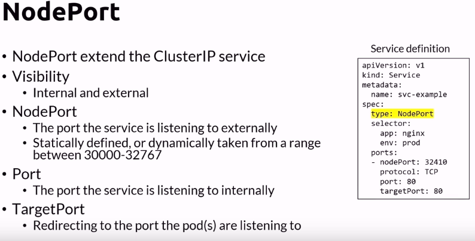

NodePort services are useful for exposing pods to external traffic where clients have network access to the Kubernetes nodes. For example, if your nodes have the hostnames node1 and node2, the example service above lets clients access http://node1:30007 or http://node2:30007. It doesn't matter which node the external client connects to, as Kubernetes configures the network routing to direct all traffic from port 30007 on any node to the appropriate pods.
In practice, I haven't seen NodePort services used much in production systems. Unusual ports are frequently subject to restrictive firewall rules and it's hard to understand what service you're communicating with using a URL like http://node1:30007. NodePort services are great for testing though, as they may not require any additional infrastructure to expose pods to external traffic, making them a quick and easy way to debug a pod.